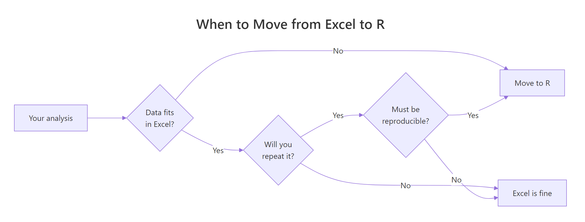

R vs Excel: 7 Signs Your Analysis Has Outgrown Spreadsheets
Excel is the world's most-used data tool, and for many tasks it's still the right one. But when your workbooks crash, your formulas break on a sort, or your results stop being reproducible, you've hit Excel's ceiling — and R is the natural upgrade. Here are seven concrete signs you've outgrown spreadsheets, each paired with runnable R code that handles the same task better.
Sign 1 — Does your file crash when you open it?
Excel's hard row ceiling is 1,048,576 rows, and in practice laptops start slogging well before that. If your workbook now takes a minute to open, or VLOOKUPs freeze the app, you've hit the size wall. R lives in memory and runs vectorised operations, so the same dataset loads in seconds and a groupwise summary runs in milliseconds. Here is what that looks like on a million-row sales table.
One million rows, one group-by, one summary — finished before you could even open the XLSX. The result is a real R object you can filter further, chart, or feed into a model, and no 32-bit memory error in sight.
Try it: Count how many orders sit in each product bucket in sales_df. You should see roughly 250,000 per product.
Click to reveal solution
Explanation: count() is dplyr shorthand for group_by() |> summarise(n = n()).
Sign 2 — Do your formulas break when rows move?
Every Excel power user has felt the pain: you insert a row, and suddenly =B7*C7 points at a different cell. Sort the sheet and half the formulas return #REF!. The root cause is that Excel formulas reference positions, not columns. R does the opposite — you refer to columns by name, so inserts, sorts, and filters can never break the reference.
Notice that mutate() refers to quantity, price, and revenue by name. You could shuffle every row, drop half the table, or append new data — those names keep pointing at the right column. In Excel terms, your "formulas" travel with your columns, not with their cell addresses.
Try it: Add a margin column equal to net - 0.6 * revenue (a stand-in cost model) and show the first three rows.
Click to reveal solution
Explanation: mutate() can reference columns it just created in the same call, so margin sees both net and revenue.
Sign 3 — Can anyone reproduce your analysis six months later?
In a spreadsheet, the analysis is the click history that no one wrote down. Which filters were applied? Was that pivot manually sorted? Were the outlier rows deleted by hand? Six months later, even you cannot be sure. In R, the script is the analysis. Hand the same code and the same data to a colleague and they will get the same result, byte for byte.
Run the block again — exact same five rows. set.seed() pins the random number generator, so every sampling, bootstrap, or simulation becomes deterministic. That is impossible to guarantee in Excel, where "delete row 27" and "sort by column C" leave no trace in the file.
Try it: Change the seed to 99 and rerun. The five rows will be different, but they will be the same five rows every time you rerun with seed 99.
Click to reveal solution
Explanation: The seed fully determines the pseudo-random sequence, so the same seed always yields the same "random" draw.
Sign 4 — Are you repeating the same steps every week?
If you find yourself dragging the same pivot, copying the same columns, and emailing the same report every Monday, you are manually running a program you never wrote down. R lets you say "do this for every group" in a single expression, and then you rerun the whole thing next week with one click.
One group_by(region, quarter) call produces every region-quarter cell Excel would need a 4x4 pivot to build. Replace the columns in group_by() and you get a different pivot instantly. Schedule the script to run on cron or GitHub Actions, and your Monday report writes itself.
group_by() are your pivot row labels, and summarise() builds the value cells.Try it: Produce a summary of total revenue by product only (ignore region and quarter).
Click to reveal solution
Explanation: Same group_by() pattern, one grouping column.
Sign 5 — Are your charts stuck looking like Excel charts?
Excel's chart wizard is great for one chart. It stops being great the moment you need four charts on the same scale, or a chart faceted by region, or any visual idiom that does not ship as a preset. R's ggplot2 is a grammar: you declare data, mapping, and layers, and the chart follows.
One pipeline goes from raw table to a four-panel dashboard, all sharing the same y-axis and theme. Swap facet_wrap(~ region) for facet_wrap(~ product) and you get a different dashboard with the same code. That kind of composition is exactly the thing Excel charts cannot do without hours of clicking.
ggplot() keeps the chart code short and fast.Try it: Change the faceting variable to product so you get one panel per product instead of per region.
Click to reveal solution
Explanation: Only the grouping column and the facet formula change — the rest of the chart stays identical.
Sign 6 — Are you copy-pasting between sheets to combine data?
VLOOKUP and INDEX-MATCH are how Excel pretends to do database joins. They work for one lookup on one sheet, but break the moment you have duplicate keys, missing matches, or more than a handful of columns to bring in. R has real relational joins: one function call, any number of columns, clear rules for what happens to unmatched rows.
Every row of sales_df now carries its tier and mgr, matched by region. left_join() keeps every sale even if the lookup is missing — critical when you do not want to silently drop data. Swap in inner_join() to keep only matched rows, or anti_join() to find sales with no matching region.
left_join() keeps the row and fills the lookup columns with NA, so the loss is visible.Try it: Use inner_join() instead so you keep only sales whose region appears in customers_df. Count the rows afterwards.
Click to reveal solution
Explanation: Every region in sales_df has a match in customers_df, so inner_join() keeps all 1M rows. If a region were missing, those rows would drop here while left_join() would keep them with NA in tier and mgr.
Sign 7 — Do your analyses go beyond basic descriptive stats?
Excel can do a mean, a pivot, and a trendline. The moment you need a multi-predictor regression, a hypothesis test, or anything a statistician would recognise as a "model", you are either bolting on add-ins or exporting to another tool. R treats modelling as a first-class citizen: lm() gives you a full regression in one line, with diagnostics, confidence intervals, and tidy extraction built in.
The coefficient table tells you everything a spreadsheet trendline would hide: how much each tier and each quarter shifts expected revenue, how precise that estimate is, and whether it is statistically significant. In this fake dataset the effects are tiny (we randomised everything), but the pattern — a full regression from a pipeline — is the kind of analysis Excel cannot do without a plug-in.
data = _ is the placeholder for the native R pipe. It tells lm() "use whatever came down the pipe as the data argument". Older code uses %>% with . instead.Try it: Fit a new model that also includes product as a predictor. Check whether the product coefficients look meaningful.
Click to reveal solution
Explanation: Adding product to the formula gives you one coefficient per product level (with the first level absorbed into the intercept). Because the data is random, none of them should reach significance.
Practice Exercises
These capstones combine several of the 7 signs. Use variable names starting with my_ to keep them separate from the tutorial objects.
Exercise 1: Top 3 regions by average order value
Filter sales_df to rows where quantity >= 10, compute average revenue per row grouped by region, and return the top 3 regions sorted descending.
Click to reveal solution
Explanation: Each verb does one thing — filter, mutate, group, summarise, arrange, slice — and the pipe chains them into one readable pipeline.
Exercise 2: Tier-level regression pipeline
Starting from sales_df, join customers_df, compute per-row revenue, and fit a regression of revenue on tier. Extract the coefficient for tierGold into my_gold_coef.
Click to reveal solution
Explanation: This is the real migration story: one pipeline joins two tables, builds a derived column, fits a model, and pulls out exactly the number you want. In Excel you would need several sheets and an add-in.
Putting It All Together
Here is a single pipeline that touches all seven signs: big data (sign 1), column references (sign 2), reproducible transforms (sign 3), grouped summaries (sign 4), a faceted chart (sign 5), a relational join (sign 6), and a regression (sign 7).
One script. One source file. Rerun it next week with fresh data and the KPIs, the model, and the chart all update themselves. That is the payoff for moving past the spreadsheet.
Summary

Figure 1: A quick decision flow for when to move an analysis from Excel to R.
| Sign | Excel pain | R fix | Key function |
|---|---|---|---|
| 1 | File crashes on large data | In-memory, vectorised ops | dplyr::group_by() |
| 2 | Formulas break on sort/insert | Columns by name, not cell ref | mutate() |
| 3 | Cannot reproduce six months later | Script is the analysis | set.seed() |
| 4 | Same manual steps every week | Grouped summaries, rerunnable | group_by() + summarise() |
| 5 | Charts stuck on preset look | Grammar of graphics, faceting | ggplot2::facet_wrap() |
| 6 | VLOOKUPs drop unmatched rows | Real relational joins | left_join() |
| 7 | Analyses stop at means and pivots | First-class modelling | lm() |
References
- Wickham, H., Çetinkaya-Rundel, M., & Grolemund, G. — R for Data Science, 2nd Edition. Link
- dplyr reference documentation. Link
- Wickham, H. — ggplot2: Elegant Graphics for Data Analysis, 3rd Edition. Link
- Microsoft — Excel specifications and limits. Link
- R Core Team — An Introduction to R. Link
- broom package reference. Link
- Posit — R and tidyverse cheat sheets. Link
Continue Learning
- Is R Worth Learning in 2026? — The full argument for investing in R, with hiring trends and use cases.
- R Data Types — The foundation R uses to hold your data, and why a tibble is not a spreadsheet.
- dplyr filter() and select() — The first two data-wrangling verbs every Excel migrant should master.